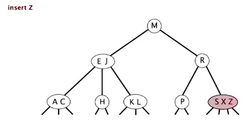
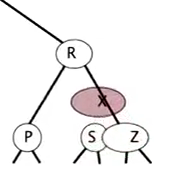
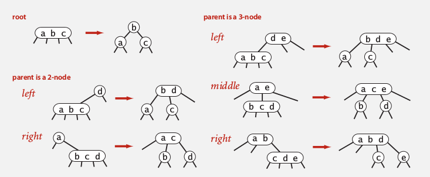
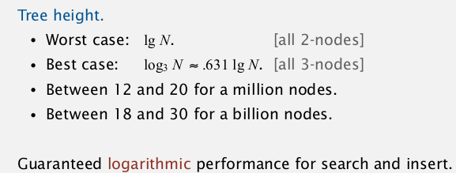
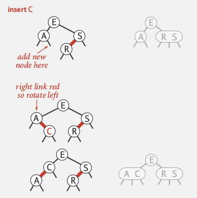
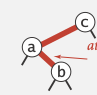

goal: lgN for insert/search/delete operations (not necessarily binary trees..)
3 algo: 2-3 tree, (left leaning) red-black tree, B-tree
1. 2-3 Search Trees
def. 2-3 tree
- allow 1 or 2 keys per node, & 2 or 3 children per node:
- 2-node: one key, 2 children (ordinary BST node)
- 3-node: 2 keys, 3 children (3 children: less, between, more)
- perfect balance: every path from root to null link has the same length (2-3 tree的一个超好的性质, 类似于一个满二叉树!)
- symmetric order: inorder traversal gives ascending order (和BST类似)

search
Just follow the correct link... Natural generalization of search in BST...
insert
- case 1: insert into a 2-node at bottom
just convert a 2-node into a 3-node
- case 2: insert into a 3-node at bottom
- create a temporary 4-node (three keys)
- move middle key in 4-node into parent, split the rest two keys into two 2-nodes
  
- if parent becom a 3-node → continue the process
- if arrived at the root (root is a 4-node with three keys): split it into three 2-nodes


splitting a 4-node: can be done in constant time (local transformation).

Analysis
Invariant: maintains symmetric order and perfect balance.
proof.
each transformation maintains the order and the balance, all possible transformations:
这个图很好, 3-node的插入一共有三种情况: 自身是root/父亲是2-node/父亲是3-node

performance
every path from root to null link has the same length.

Implementation
- direct implementation is complicated:
- bottom line: Could do it, but there's a better way.
2. Red-Black BST
LLRB tree: left-leaning red-black tree.
BST representation of the 2-3 trees
use internal left-leaning links for 3 nodes
红色link即为internal left leaning link (红黑树就是这么来的), 用红色link连接起来的组成一个(虚拟的)3-node 或4-node.
- 3-node用一个red link表示:

- 4-node用两个red link表示:
 ⇒
⇒  or
or  or
or 
example:

properties
- no node has two red links (不可以一个节点连两个red link)
- every path from path to null link has the same number of black links (想象所有red link都变为horizontal)
- all red links lean left

representation
Each node has only one link from parent
⇒ add a boolean to encode color of links (the color of the link from parent).

private class Node{
private Key key;
private Value val;
Node left, right;
boolean color;//true means red
}
private boolean isRed(Node nd){
if (nd==null) return false;
return nd.color;
}
insert to parent 操作: 只需把color变为RED即表示该节点 被变成了和父节点一起的一个(虚拟)节点.
elementary operations
left-rotation
(def: convert a right-learning red link to left. )


(symmetric ordering and perfect black balance are maintained)
private Node rotateLeft(Node h){
Node s = h.right;
h.right = s.left;
s.left = h;
s.color = h.color; // not = BLACK
h.color = RED;
return s;
}
right-rotation
(temporarily turn a left-leaning red link to right)


private Node rotateRight(Node h){...}
right rotation 是为了应对这种情况:
 rotateRight(c) ⇒
rotateRight(c) ⇒ 
color-flip
(split a 4-node, with three kyes — two red links)


private void filpColor(Node h){
h.color = RED;
h.left.color = BLACK;
h.right.color = BLACK;
}
Implementation
Basic strategy
Maintain one-to-one correspondence with 2-3 tree by applying elementary operations.
- search
Exactly the same as elementary BST. ( ⇒ The same code for floor and ceiling)
- insert
Each insert will generate a red link (then should rotate to make it legal)
插入的时候有两种可能:
- insert into a 2-node at the bottom

- standart BST insert
- if have red right link: rotateLeft
ex:

- insert into a 3-node
有三种可能: insert into left/middle/right, right最简单, left捎复杂, middle最复杂, 见下图:

- standard BST insert and color nodes
- if necessary, rotate to balance 4-node, 比如:

- flip colors to pass red link to upper level
- if necessary, rotate to make all links left-leaning
ex:

ex2:

视频最后一段的demo太帅了! 叹为观止!!
Code
原来只有4种(其实是3种)情况要调整:
- left = black, right = red
 ⇒ rotateLeft(a)
⇒ rotateLeft(a)
- left =red, left.right = red [这个不会出现, 因为这对于下一层来说是case 1..]
 ⇒ rotateLeft(e) ⇒ 变为case 3
- left = red, left.left = red
 ⇒ rotateRight(s) ⇒ 变为case 4
⇒ rotateRight(s) ⇒ 变为case 4
- left = red. right = red
 ⇒ flipColor(r)
⇒ flipColor(r)
几个状态之间的转化:

只要三行代码即可处理LLRB tree !! 老爷子牛逼......
(这个也是在2007年algo第四版的时候才刚刚弄出来的, 以前的代码要复杂)
private Node put(Node nd, Key k, Value v){
if(nd==null) return new Node(k,v,RED);
int cmp = k.compareTo(nd.key);
if(cmp==0) nd.val = v; // 这里不急着返回 -- same trick as for BSTs..
else if(cmp<0) nd.left = put(nd.left, k, v);
else nd.right = put(nd.right, k, v);
// modifications to maintain LLRB tree property:
if( isRed(nd.right) && !isRed(nd.left) ) nd = rotateLeft(nd);//case 1
//if( isRed(nd.left) && isRed(nd.left.right) ) nd.left = rotateLeft(nd.left);// case 2 -- never happen...
if( isRed(nd.left) && isRed(nd.left.right) ) nd = rotateRight(nd);// case 3
if( isRed(nd.left) && isRed(nd.right) ) flipColor(nd);//case 4
return nd;
}
这三行代码越看越精妙......
Analysis

worst case: the left path is alternating red and black.
⇒ longest path <= 2 * shortest path (height<= 2lgN)
practical applications: height ~ 1.0 lgN
summery:

3. B-trees
setting: data access in file system.
Probe is much expensive than accessing data within a page.
Goal: access data using a minimum number of probes.
B-tree
def.
external nodes: contain just keys, not links
internal nodes: contain key-link pairs
def. B-tree
Generalize 2-3 trees by allowing up to M-1 keys per node:
-
= 2 keys in root
-
= M/2 keys in other nodes
- external nodes contain client keys
- internal nodes contain copies of keys to guide search

Searching
similar to BST/2-3tree
ex.

(Choose M as large as possible so that M links fit into a page)
Insertion
similar to 2-3 tree

Analysis

System implementations
system implementations of RBtree.
java:
java.util.TreeMap, java.util.TreeSet.
八卦1:

八卦2: Sedgewick 的朋友, Philippe Flajolet, 是一个X!

Comments !